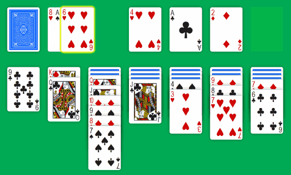

Two years ago, I started Solitaire-Play with the “Turn One” variant of Klondike Solitaire. It's a classic game and my favorite version, the one I used to play on Windows. You know it's already difficult to win with a single draw. I don't feel the challenge to turn three cards at a time.
I understand it's just my opinion and that it's finally time to launch another solitaire. This summer, I took a few hours to create a new Klondike “Turn Three”. Some months ago, I had improved my CSS files to better represent all kind of card stacks. And now, with one extra CSS rule, I succeed to display the Waste pile as a fan of three cards.

I “just” have to work on the JavaScript part to manage the turn three version. The obvious concern was the draw code, to take three cards or one, according to which Klondike is played. But in fact, the big problem was to handle the undo system. After a three draw, all 3 cards must return to the deck when the player chose to cancel his last move.
Also, I had to update the hint system. I keep it simple and I only change the way of playing a “2” card. With Klondike Turn One, I never suggest to play a “2” from the Waste to the Tableau:
But with Klondike Turn Three, it become a more interesting move:
Et voila! I hope this small improvement will please people who prefer Klondike Turn Three. And that players who like the classic Klondike Turn One will give it a try.
Michel. (2016/08/21)